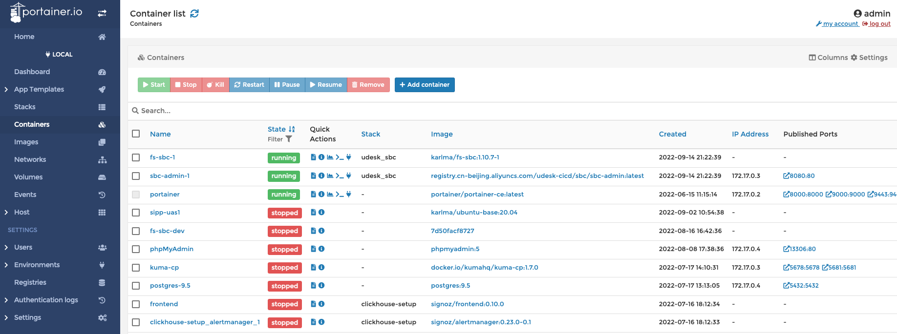

前言
第一章 VoIP基础
第一节 IP网络基础
TCP/IP 4层网络模型


- 物理层: 建立、维护、断开物理连接；
- 数据链路层: 建立逻辑连接、进行硬件地址寻址、差错校验等功能；
- 网络层: 进行逻辑地址寻址、实现不同网络之间的路径选择；
- 传输层: 定义传输数据得协议端口，以及流程和差错校验，协议有TCP、UDP，数据包一旦离开网卡即进入网络传输层；
- 会话层: 建立、管理、终止会话；
- 表示层: 数据的表示、安全、压缩；
- 应用层: 网络协议与最终用户得一个接口，协议有http ftp tftp smtp snmp dns telnet https pop3 dhcp。
ARP
ARP(Address Resolution Protocol)地址解析协议，是用来将IP地址解析为MAC地址的协议。主机或三层网络设备上会维护一张ARP表，用于存储IP地址和MAC地址的映射关系，一般ARP表项包括动态ARP表项和静态ARP表项。
动态ARP表项由ARP协议通过ARP报文自动生成和维护，可以被老化，可以被新的ARP报文更新，也可以被静态ARP表项覆盖。
静态ARP表项是由网络管理员手工建立的IP地址和MAC地址之间固定的映射关系。静态ARP表项不会被老化，不会被动态ARP表项覆盖
- 查看本机的ARP表的命令
arp -la
ICMP
Internet 控制消息协议 (ICMP) 是网络设备用来诊断网络通信问题的网络层协议。 ICMP 主要用于确定数据是否及时到达其预期目的地。通常，ICMP 协议用于网络设备，例如路由器。 ICMP 对于错误报告和测试至关重要，但它也可用于分布式拒绝服务 (DDoS) 攻击。
与 Internet 协议 (IP) 不同，ICMP 不与 TCP 或 UDP 等传输层协议相关联。这使得 ICMP 成为无连接协议：一个设备在发送 ICMP 消息之前不需要打开与另一个设备的连接。正常的 IP 流量使用 TCP 发送，这意味着任何两个交换数据的设备都将首先执行 TCP 握手，以确保两个设备都准备好接收数据。 ICMP 不会以这种方式打开连接。 ICMP 协议也不允许针对设备上的特定端口。
- ICMP数据包

- 发送ICMP的命令
ping
TCP
- 三次握手&四次挥手

- 三次握手数据包

- 四次挥手数据包
RTP

问题
- 以下协议分别哪一层的协议？
- TCP
- UDP
- HTTP
- HTTPS
- SSH
- SIP
- RTP
- 这些协议默认端口是什么？
- HTTP
- HTTPS
- TELNET
- SSH
- FTP
- SMTP
- POP3
- IMAP
- MySQL
- SIP
- TCP
- UDP
- 路由器和交换机分别在哪一层工作？
参考链接:
第二节 电话通信基础
三层网
- 核心网（核心层）
- 承载网（汇聚层）
- 接入网（接入层）

无线电话
- 基站
- RF天线
- RRU：远端射频单元，主要负责射频处理
- BBU：基带处理单元，主要负责信号调制
- LTE：长期演进
- VoLTE：Voice over LTE
- GSM: 全球移动通信系统
- CDMA: 码分多址


有线电话
- DLC: 数据环路载波
- 调制/解调：PCM（脉冲编码调制）
- E1/T1：SS1/SS7/ISDN PRI
- PBX：程控交换机
- PSTN：公共交换电话网络

问题
- 什么是调制解调？
- 分组交换与电路交换的区别是什么？
- PCM是什么意思？
- PSTN是什么意思？
- PBX是什么意思？
- SS1/SS7/ISDN PRI是什么意思？
第三节 VoIP
Voice over Internet Protocol
Voice over Internet Protocol (VoIP), also called IP telephony, is a method and group of technologies for the delivery of voice communications and multimedia sessions over Internet Protocol (IP) networks, such as the Internet. The terms Internet telephony, broadband telephony, and broadband phone service specifically refer to the provisioning of communications services (voice, fax, SMS, voice-messaging) over the Internet, rather than via the public switched telephone network (PSTN), also known as plain old telephone service (POTS).
VoIP协议做什么
- 网络传输
- 会话管理
- 信号：注册/发现、拨号、能力协商、呼叫控制、DTMF
- 媒体：媒体描述（类型、编解码）
常见的VoIP协议
- SIP(IETF)
- H.323(ITU)
- MGCP
- H.248
- RTP
- RTCP
- SRTP
- SDP
- Jingle: XMPP
- Skype
语音编码
- PCMA：A-law
- PCMU：μ-law
- G.711：64K bit/s
- G.729：8K
- G.723.1：5.3K, 6.3K
- ARM-WB：6.60-23.85
- ARM(ARM-NB)：4.75-12.2
视频编码
- H.263
- H.246
- V8
- V9
问题
- 编解码是什么意思？有哪些常用的编解码？
- DTMF是什么意思？
- VoIP常用的协议有哪些？完成什么功能？
- VoIP与PSTN比有什么优点？有什么缺点？
- VoIP都能做什么？
参考链接
第四节 SIP协议
SIP定义
The Session Initiation Protocol (SIP) is a signaling protocol used for initiating, maintaining, and terminating communication sessions that include voice, video and messaging applications.
SIP is used in Internet telephony, in private IP telephone systems, as well as mobile phone calling over LTE (VoLTE).
The protocol defines the specific format of messages exchanged and the sequence of communications for cooperation of the participants. SIP is a text-based protocol, incorporating many elements of the Hypertext Transfer Protocol (HTTP) and the Simple Mail Transfer Protocol (SMTP).
A call established with SIP may consist of multiple media streams, but no separate streams are required for applications, such as text messaging, that exchange data as payload in the SIP message.
INVITE sip:9171959@112.97.160.199:42051;transport=udp SIP/2.0
Via: SIP/2.0/UDP 47.100.223.119:5474;rport;branch=z9hG4bK7SB00gXrv4pQp
Route: <sip:139.224.80.27:5474>;lr;received=sip:112.97.160.199:42051
Max-Forwards: 70
From: "188xxxx7678" <sip:188xxxx7678@kcc1.s2.udesk.cn>;tag=r74jSZy64ZZ4r
To: <sip:9171959@112.97.160.199:42051;transport=udp>
Call-ID: 290be5c2-b7ef-123b-26b0-00163e004ba5
CSeq: 57527883 INVITE
Contact: <sip:mod_sofia@47.100.223.119:5474>
User-Agent: FreeSWITCH-mod_sofia/1.6.20~64bit
Allow: INVITE, ACK, BYE, CANCEL, OPTIONS, MESSAGE, INFO, UPDATE, REGISTER, REFER, NOTIFY, PUBLISH, SUBSCRIBE
Supported: timer, path, replaces
Allow-Events: talk, hold, conference, presence, as-feature-event, dialog, line-seize, call-info, sla, include-session-description, presence.winfo, message-summary, refer
Content-Type: application/sdp
Content-Disposition: session
Content-Length: 272
Remote-Party-ID: "188xxxx7678" <sip:188xxxx7678@kcc1.s2.udesk.cn>;party=calling;screen=yes;privacy=off
- 说明
INVITE: 方法，URI, 版本
Via: 请求通过的路径，响应时也要通过这些路径
Route: lr 宽松路由
Max-Forwards: 最大转接数
From：
To：
Call-ID:
CSeq:
Contact:
User-Agent:
Allow:
Supported:
Allow-Events:
Content-Type:
Content-Disposition:
Remote-Party-ID:
SIP网络元素
- User Agent
- Proxy Server
- Registar Server
- Gateway
- SBC(Session border controller)
SIP消息和响应
-
REGISTER
-
INVITE
-
ACK
-
BYE
-
CANCEL
-
REFER
-
INFO
-
OPTIONS
-
1xx：Provisional Responses
- 100: Trying
- 180: Ringing
- 183: Session Progress
-
2xx: Successful Responses
- 200 OK
-
3xx: Redirection Responses
- 302 Moved Temporarily
-
4xx: Client Failure Responses
- 401: Unauthorized
- 403: Forbidden
- 404: Not Found
- 408: Request Timeout
- 480: Temporarily Unavailable
-
5xx: Server Failure Responses
-
6xx: Global Failure Responses
SDP
The Session Description Protocol (SDP) is a format for describing multimedia communication sessions for the purposes of announcement and invitation. Its predominant use is in support of streaming media applications, such as voice over IP (VoIP) and video conferencing. SDP does not deliver any media streams itself but is used between endpoints for negotiation of network metrics, media types, and other associated properties. The set of properties and parameters is called a session profile.
- 例子
v=0
o=FreeSWITCH 1664145433 1664145434 IN IP4 47.100.223.119
s=FreeSWITCH
c=IN IP4 47.100.223.119
t=0 0
m=audio 17918 RTP/AVP 8 0 101 13
a=rtpmap:8 PCMA/8000
a=rtpmap:0 PCMU/8000
a=rtpmap:101 telephone-event/8000
a=fmtp:101 0-16
a=rtpmap:13 CN/8000
a=ptime:20
- 说明
v= 协议版本
o= 发起方：<username> <sess-id> <sess-version> <nettype> <addrtype> <unicast-address>
s= 会话名称
c= 连接信息 <nettype> <addrtype> <unicast-address>
t= 计时信息：<start-time> <stop-time>：都是0代表永久
m= 媒体信息：<media> <port> <proto> <fmt>
a= 属性
IMS
The IP Multimedia Subsystem or IP Multimedia Core Network Subsystem (IMS) is a standardised architectural framework for delivering IP multimedia services. Historically, mobile phones have provided voice call services over a circuit-switched-style network, rather than strictly over an IP packet-switched network. Alternative methods of delivering voice (VoIP) or other multimedia services have become available on smartphones, but they have not become standardized across the industry.IMS is an architectural framework that provides such standardization.
- 3GPP: 第三代合作伙伴项目，开发移动通信协议标准的一个组织；
SIP消息分析工具
- sngrep:
- sipcapture:
- tcpdump,wireshark
问题
- SIP协议是哪一层的协议？
- SIP协议用的是什么传输协议？
- SIP协议可以传输文本消息吗？
- SIP网络里都有哪些元素？
- REGISTER消息返回401说明什么？
- INVITE消息返回408说明什么
- SIP协议的RFC版本是什么？
- SBC在SIP网络里有什么用？
- Gateway在SIP网络里有会用？
- 能力协商过程是什么样的？
- 为什么iptables已经封了的IP地址，在sngrep里还能看到？
参考链接
第二章 FreeSWITCH
版本
- FreeSWITCH与Asterisk
- 2008年 1.0版本
- 最近的稳定版：1.15.9
特点
- 高呼叫并发数
- 高稳定性
- 近乎完备的功能
- 灵活的配置
- 功能强大的FSAPI
- 支持多种语言开发
第一节 编译&运行
环境准备
docker环境
- 安装docker

- 安装portainer

创建操作系统docker镜像
- Dockerfile："ubuntu-base:20.04"
FROM amd64/ubuntu:20.04
MAINTAINER Karl Ma
# Change sourcelist to aliyun
RUN sed -i 's/archive.ubuntu.com/mirrors.aliyun.com/g' /etc/apt/sources.list && \
sed -i 's/security.ubuntu.com/mirrors.aliyun.com/g' /etc/apt/sources.list
RUN apt update
# locale
RUN apt install -y locales
RUN localedef -i en_US -c -f UTF-8 -A /usr/share/locale/locale.alias en_US.UTF-8
ENV LANG=en_US.utf8
# timezone
RUN DEBIAN_FRONTEND=noninteractive apt install -yq tzdata
RUN ln -fs /usr/share/zoneinfo/Asia/Harbin /etc/localtime && \
dpkg-reconfigure -f noninteractive tzdata
ENV TZ="Asia/Harbin"
# vim
RUN apt install -y vim \
iputils-ping \
net-tools \
git
# clear apt cache
RUN rm -rf /var/lib/apt/lists/*
- build
docker build --platform linux/x86_64 -t ubuntu-base:20.04 .
创建编译环境docker镜像
- Dockerfile："fs-dev:1.10.7-1"
FROM karlma/ubuntu-base:20.04
MAINTAINER Karl Ma
ENV REFRESHED_AT 2022-08-16
RUN apt-get update && apt-get install -y \
autoconf \
cmake \
g++ \
libcurl4-openssl-dev \
libedit-dev \
libjpeg-dev \
libldns-dev \
liblua5.2-dev \
libmp3lame-dev \
libmpg123-dev \
libncurses5-dev \
libopus-dev \
libpcap-dev \
libpcre3-dev \
libsctp-dev \
libshout3-dev \
libsndfile1-dev \
libspeex-dev \
libspeexdsp-dev \
libsqlite3-dev \
libssl-dev \
libtiff-dev \
libtiff-dev \
libtool-bin \
libmariadb-dev \
mariadb-client \
lua5.2 \
make \
unixodbc-dev \
uuid-dev \
yasm \
zlib1g-dev \
curl \
telnet \
&& rm -rf /var/lib/apt/lists/*
VOLUME /usr/local/freeswitch
WORKDIR /usr/local/freeswitch
- build
docker build --platform linux/x86_64 -t fs-dev:1.10.7-1 .
获取源代码
- 获取FreeSWITCH源码
git clone -b v1.10.7 https://github.com/signalwire/freeswitch.git
- 获取sofia源码
cd /usr/local/src/freeswitch #在freeswitch源码目录下
git clone https://github.com/freeswitch/sofia-sip.git
- 获取spandsp源码
cd /usr/local/src/freeswitch
git clone https://github.com/freeswitch/spandsp.git
编译sofia和spandsp
- 启动容器
docker run -it -v 本地源码目录:/usr/local/src/freeswitch -v 本地安装目录:/usr/local/freeswitch fs-dev:1.10.7-1 /bin/bash
- 编译sofia
cd sofia-sip
./bootstrap.sh -j
./configure --prefix=/usr/local/freeswitch
make
make install
ldconfig -p
安装完成在下面目录中
/usr/local/freeswitch/lib/libsofia-sip-ua*
/usr/local/freeswitch/lib/pkconfig/sofia-sip-ua.pc
/usr/local/freeswitch/include/sofia-sip-1.13
- 编译spandsp
cd spandsp/
./bootstrap.sh -j
./configure --prefix=/usr/local/freeswitch
make
make install
ldconfig -p
安装完成后在下面目录中
/usr/local/freeswitch/lib/libspandsp*
/usr/local/freeswitch/include/spandsp
/usr/local/freeswitch/include/spandsp.h
- export PKG_CONFIG_PATH
export PKG_CONFIG_PATH=$PKG_CONFIG_PATH:/usr/local/freeswitch/lib/pkgconfig
- ldconfig
echo "/usr/local/freeswitch/lib" > /etc/ld.so.conf.d/freeswitch.conf
ldconfig
ldconfig -p|grep sofia
ldconfig -p|grep spandsp
编译freeswitch
cd /usr/local/src/freeswitch
./bootstrap.sh -j
- 修改modules.conf
applications/mod_commands
applications/mod_conference
applications/mod_curl
applications/mod_db
applications/mod_directory
applications/mod_distributor
applications/mod_dptools
applications/mod_easyroute
applications/mod_expr
applications/mod_fifo
applications/mod_hash
applications/mod_httapi
applications/mod_http_cache
asr_tts/mod_unimrcp
codecs/mod_opus
dialplans/mod_dialplan_xml
endpoints/mod_loopback
endpoints/mod_rtc
endpoints/mod_sofia
event_handlers/mod_cdr_sqlite
event_handlers/mod_event_socket
formats/mod_local_stream
formats/mod_native_file
formats/mod_sndfile
formats/mod_tone_stream
languages/mod_lua
loggers/mod_console
loggers/mod_logfile
loggers/mod_syslog
say/mod_say_en
say/mod_say_zh
xml_int/mod_xml_curl
- configure
./configure --enable-core-odbc-support
目录结构
Locations:
prefix: /usr/local/freeswitch
exec_prefix: /usr/local/freeswitch
bindir: ${exec_prefix}/bin
confdir: /usr/local/freeswitch/conf
libdir: ${exec_prefix}/lib
datadir: /usr/local/freeswitch
localstatedir: /usr/local/freeswitch
includedir: /usr/local/freeswitch/include/freeswitch
certsdir: /usr/local/freeswitch/certs
dbdir: /usr/local/freeswitch/db
grammardir: /usr/local/freeswitch/grammar
htdocsdir: /usr/local/freeswitch/htdocs
fontsdir: /usr/local/freeswitch/fonts
logfiledir: /usr/local/freeswitch/log
modulesdir: /usr/local/freeswitch/mod
pkgconfigdir: ${exec_prefix}/lib/pkgconfig
recordingsdir: /usr/local/freeswitch/recordings
imagesdir: /usr/local/freeswitch/images
runtimedir: /usr/local/freeswitch/run
scriptdir: /usr/local/freeswitch/scripts
soundsdir: /usr/local/freeswitch/sounds
storagedir: /usr/local/freeswitch/storage
cachedir: /usr/local/freeswitch/cache
- make install
make
make install
docker启动freeswitch
-
docker网络尽量使用用host模式
-
Dockerfile
FROM karlma/ubuntu-base:20.04
MAINTAINER Karl Ma
ENV REFRESHED_AT 2022-08-16
RUN groupadd -r freeswitch --gid=999 && useradd -r -g freeswitch --uid=999 freeswitch
RUN apt-get update && apt-get install -y \
libcurl4-openssl-dev \
libedit-dev \
libjpeg-dev \
libldns-dev \
liblua5.2 \
libmp3lame-dev \
libmpg123-dev \
libncurses5 \
libopus-dev \
libpcap-dev \
libpcre3 \
libsctp-dev \
libshout3 \
libsndfile1 \
libspeex-dev \
libspeexdsp-dev \
libsqlite3-dev \
libssl-dev \
libtiff-dev \
libtool-bin \
lua5.2 \
unixodbc \
uuid \
zlib1g \
curl \
telnet \
libmariadb-dev \
mariadb-client \
sngrep \
gosu
RUN apt autoremove
RUN apt clean && rm -rf /var/lib/apt/lists/*
ENV FS_SBC_BASE freeswitch # 编译安装的目标
ENV DEPLOY_BASE deploy # 相关脚本目标
# Limits Configuration
COPY ${DEPLOY_BASE}/freeswitch.limits.conf /etc/security/limits.d/
COPY ${DEPLOY_BASE}/docker-entrypoint.sh /
RUN mkdir -p /usr/local/freeswitch
COPY ${FS_SBC_BASE}/bin /usr/local/freeswitch/bin
COPY ${FS_SBC_BASE}/certs /usr/local/freeswitch/certs
COPY ${FS_SBC_BASE}/fonts /usr/local/freeswitch/fonts
COPY ${FS_SBC_BASE}/lib /usr/local/freeswitch/lib
COPY ${FS_SBC_BASE}/mod /usr/local/freeswitch/mod
COPY ${FS_SBC_BASE}/recordings /usr/local/freeswitch/recordings
COPY ${FS_SBC_BASE}/share /usr/local/freeswitch/share
COPY ${FS_SBC_BASE}/sounds /usr/local/freeswitch/sounds
COPY ${FS_SBC_BASE}/storage /usr/local/freeswitch/storage
RUN mkdir -p /usr/local/freeswitch/db
RUN mkdir -p /usr/local/freeswitch/run
RUN mkdir -p /var/log/freeswitch
RUN ln -s /var/log/freeswitch /usr/local/freeswitch/log
SHELL ["/bin/bash"]
HEALTHCHECK --interval=15s --timeout=5s \
CMD /usr/local/freeswitch/bin/fs_cli -x status | grep -q ^UP || exit 1
# xml rpc
EXPOSE 7744/tcp
# sip
EXPOSE 7854/udp
EXPOSE 7854/tcp
EXPOSE 8891/udp
EXPOSE 8891/tcp
# rtp
EXPOSE 16384-17185/udp
WORKDIR /usr/local/freeswitch
VOLUME /usr/local/freeswitch/conf
VOLUME /usr/local/freeswitch/scripts
VOLUME /var/log/freeswitch
ENTRYPOINT ["/docker-entrypoint.sh"]
CMD ["freeswitch"]
- deploy/freeswitch.limits.conf文件
freeswitch soft core unlimited
freeswitch soft data unlimited
freeswitch soft fsize unlimited
freeswitch soft memlock unlimited
freeswitch soft nofile 999999
freeswitch soft rss unlimited
freeswitch hard stack 240
freeswitch soft cpu unlimited
freeswitch soft nproc unlimited
freeswitch soft as unlimited
freeswitch soft priority -11
freeswitch soft locks unlimited
freeswitch soft sigpending unlimited
freeswitch soft msgqueue unlimited
freeswitch soft nice -11
- 启动脚本deploy/docker-entrypoint.sh
#!/bin/bash
set -e # 运行出错即可退出
if [ "$1" = 'freeswitch' ]; then
chown -R freeswitch:freeswitch /usr/local/freeswitch
chown -R freeswitch:freeswitch /var/log/freeswitch
if [ -d /docker-entrypoint.d ]; then
for f in /docker-entrypoint.d/*.sh; do
[ -f "$f" ] && . "$f"
done
fi
exec gosu freeswitch /usr/local/freeswitch/bin/freeswitch -u freeswitch -g freeswitch -nonat -c
fi
exec "$@" # 执行非freeswitch命令
问题
- 自己动手做一遍，输出一个FreeSWITCH的docker镜像
- 系统启动后，注册一个分机，拨9196，测试一下echo
- FreeSWITCH的启动参数-nonat是什么意思，-nc,ncwait是什么意思？
第二节 基本配置
XML
<?xml version="1.0" encoding="ISO-8859-1"?>
<!-- comment here -->
<note>
<from user="John" id="1234">John</from>
<to user="Bob" id="5678">George</to>
<heading>Reminder</heading>
<body>Don't forget the meeting!</body>
</note>
- 声明
- 元素：树形结构，root, item
- 属性
- 注释
- 大小写敏感
FreeSWITCH特有的解析方式
<?xml version="1.0"?>
<document type="freeswitch/xml">
<X-PRE-PROCESS cmd="include" data="vars.xml"/>
<section name="configuration" description="Various Configuration">
<X-PRE-PROCESS cmd="include" data="autoload_configs/*.xml"/>
</section>
<section name="dialplan" description="Regex/XML Dialplan">
<X-PRE-PROCESS cmd="include" data="dialplan/*.xml"/>
</section>
</document>
- 预处理：X-PRE-PROCESS
注意：预处理的注释失效，想要注释的话，换成X-NO-PRE-PROCESS
- cmd="include"
配置文件结构
- minimal
- vanilla(default)
重点说明
- freeswitch.xml
<?xml version="1.0"?>
<document type="freeswitch/xml">
<X-PRE-PROCESS cmd="include" data="vars.xml"/>
<section name="configuration" description="Various Configuration">
<X-PRE-PROCESS cmd="include" data="autoload_configs/*.xml"/>
</section>
<section name="dialplan" description="Regex/XML Dialplan">
<X-PRE-PROCESS cmd="include" data="dialplan/*.xml"/>
</section>
</document>
freeswitch.xml.fsxml, 不要直接编辑这个文件
- vars.xml
<include> <!-- 注意这里 -->
<X-PRE-PROCESS cmd="set" data="global_codec_prefs=PCMU,PCMA"/>
<!-- NOTE: CHANGE THIS BEFORE USE -->
<X-PRE-PROCESS cmd="set" data="xml_rpc_password=worksnot"/>
<X-PRE-PROCESS cmd="set" data="internal_sip_port=5060"/>
<X-PRE-PROCESS cmd="set" data="external_sip_port=5080"/>
</include>
-
autoload_configs
- modules.conf.xml
<configuration name="modules.conf" description="Modules"> <modules> <!-- Loggers (I'd load these first) --> <load module="mod_console"/> <load module="mod_logfile"/> <!-- XML Interfaces --> <load module="mod_xml_rpc"/> <!-- Event Handlers --> <load module="mod_cdr_csv"/> <load module="mod_event_socket"/> <!-- Endpoints --> <load module="mod_sofia"/> <load module="mod_loopback"/> <!-- Applications --> <!--load module="mod_signalwire"/--> <load module="mod_commands"/> <load module="mod_conference"/> <load module="mod_db"/> <load module="mod_dptools"/> <load module="mod_expr"/> <load module="mod_hash"/> <load module="mod_esf"/> <!-- Dialplan Interfaces --> <load module="mod_dialplan_xml"/> <!-- Codec Interfaces --> <!-- File Format Interfaces --> <load module="mod_sndfile"/> <load module="mod_native_file"/> <!-- Third party modules --> </modules> </configuration>- sofia.conf.xml
<configuration name="sofia.conf" description="sofia Endpoint"> <global_settings> <param name="log-level" value="0"/> <param name="tracelevel" value="DEBUG"/> </global_settings> <profiles> <X-PRE-PROCESS cmd="include" data="../sip_profiles/*.xml"/> </profiles> </configuration>- switch.conf.xml
<configuration name="switch.conf" description="Core Configuration"> <settings> <param name="colorize-console" value="true"/> <!-- Max number of sessions to allow at any given time --> <param name="max-sessions" value="1000"/> <!--Most channels to create per second --> <param name="sessions-per-second" value="30"/> <!-- Default Global Log Level - value is one of debug,info,notice,warning,err,crit,alert --> <param name="loglevel" value="debug"/> <!-- RTP port range --> <param name="rtp-start-port" value="16384"/> <param name="rtp-end-port" value="32768"/> </settings> </configuration> -
sofia_profiles
<profile name="internal">
<settings>
<param name="auth-calls" value="true"/>
<param name="apply-nat-acl" value="nat.auto"/>
<param name="debug" value="0"/>
<param name="sip-trace" value="yes"/>
<param name="dialplan" value="XML"/>
<param name="context" value="default"/>
<param name="codec-prefs" value="$${global_codec_prefs}"/>
<param name="rtp-ip" value="$${local_ip_v4}"/>
<param name="sip-ip" value="$${local_ip_v4}"/>
<param name="ext-rtp-ip" value="auto-nat"/>
<param name="ext-sip-ip" value="auto-nat"/>
<param name="sip-port" value="$${internal_sip_port}"/>
</settings>
</profile>
-
directory
-
dialplan
问题
- FreeSWITCH的配置包括几个核心的部分，分别完成什么功能？
- X-PRE-PROCESS代表什么，如何注释？
- 加载配置文件是按什么继续加载的？
- FreeSWITCH报错中提示配置错误的行数是指的哪个文件？
- 启动里加载的模块在哪里配置？
- CPS是什么意思，在哪里配置？
- 最大并发数在哪里配置？
- RTP的端口范围在哪里配置？
参考链接
第三节 分机
第四节 Dialplan
当一个呼叫在ROUTING状态下到达拨号规则解析器时，相应的拨号规则就开始解析了。 随着解析的进行，在xml文件中的符合条件的 或 标签中的指令形成一个指令表，安装到这个通道中。
你可以将拨号规则文件放到conf/dialplan/default下，这个目录下的拨号规则要比enum拨号规则优先处理。这个目录下的文件执行优先级是按其文件名开头的数字排序（由小到大），最大的那个文件是99999_enum.xml，这个文件捕捉所以的呼叫，所以我们自己定义的文件一定要小于这个文件才可能被先执行。一个以字母开头的文件名会大小999999_enum.xml。
可以通过${api func(api arg ${var_name})}的方式调用一个模块的函数。
通常一个拨号规则文件会包括三个要素：context, extension, condition和action。这些项目会被依次处理，只到达到action。
context
context是一个extension的逻辑组，一个context可以包含一个或多个extension。
context有一个name参数，any是一个保留的name参数值，它代表任何context。name用来标识一个context。在freeswitch.xml的dialplan section中可以有多个context。
extension
extension就是一个呼叫的目标。它有一个name，一些condition和action，这些东西会告诉freeswitch应该做什么。
语法：
<extension name="{exten_name}" [continue="[true|false]"]>
name参数是必须的，它是extension的唯一标识。
另外还有一个可选的参数continue，如果它配置为true的话，即使这个extension已经匹配，在执行完它的action后，还会继续执行后序的extension。其默认值为false。
{exten_name}可以是任何值。有一种特殊情况，如果exten_name正好与destination_number相等的话，解析器会从这个extension开始解析。但这是意味着就会执行它（执行要看它里面的condition）。如果没有这一特殊情况，解析器会从第一个extension开始解析。
如果condition中的field与expression匹配，再执行condition中的action。此时如果expresion中的以()括起来的值话，$1,$2,…,$N会依次得到这些值。在action中的data可以使用这些变量。
如果没有匹配成功，则会执行 中的指令。此时，因为没有匹配，所以$1,$2等是没有值的。
condition中除了field和expression参数外，还可以有一个break参数，这个参数指明什么情况下中断这个extension的条件匹配。也就是说extension在什么情况下在这个condition中止查询，这个condition后面的condition不在执行了。
break的值可以是：
- ‘on-true’ : 如果这个匹配成功，则下面的condition不再查询
- ‘on-false’: 如果这个匹配失败，则…… (这个是默认值) 。也就是说，默认的情况下，只要有一个condition匹配失败了* ，这个extension也就不再往下执行了，再换它下面的extension。*
- ‘always’ : 总是在此处停止
- ‘never’ : 永远不在此处停止
示例1：
<extension>
<condition field="destination_number" expression="^500$">
<action application="bridge" data="sofia/profilename/500%x.x.x.x"/>
</condition>
</extension>
示例2，通过网关呼叫用户：
<extension name="testing">
<condition field="destination_number" expression="^(100)$">
<action application="bridge" data="sofia/gateway/gw/$1"/>
</condition>
</extension>
condition
condition就是决定当然呼叫是否要在这个extension中处理的一个模式匹配标签。
语法：
<condition field="[{field_name}|${variable_name}|${api_func(api_args ${var_name})}]" expression="{expression}" break="[on-true|on-false|always|never]">
<action application="app name" data="app arg"/>
<anti-action application="app name" data="app arg"/>
</condition>
fileld和expression是必须的,break是可选的。
有一些内部变量可以用：
- context Why can we use the context as a field? Give us examples of usages please.
- rdnis Redirected Number, the directory number to which the call was last presented.
- destination_number Called Number, the number this call is trying to reach (within a given context)
- dialplan Name of the dialplan module that are used, the name is provided by each dialplan module. Example: XML
- caller_id_name Name of the caller (provided by the User Agent that has called us).
- caller_id_number Directory Number of the party who called (caller) -- can be masked (hidden)
- ani Automatic Number Identification, the number of the calling party (caller) -- cannot be masked
- aniii The type of device placing the call ANI2
- uuid Unique identifier of the current call? (looks like a GUID)
- source Name of the FreeSWITCH module that received the call (e.g. PortAudio)
- chan_name Name of the current channel (Example: PortAudio/1234). Give us examples when this one can be used.
- network_addr IP address of the signaling source for a VoIP call.
- year Calendar year, 0-9999
- yday Day of year, 1-366
- mon Month, 1-12 (Jan = 1, etc.)
- mday Day of month, 1-31
- week Week of year, 1-53
- mweek Week of month, 1-6
- wday Day of week, 1-7 (Sun = 1, Mon = 2, etc.)
- hour Hour, 0-23
- minute Minute (of the hour), 0-59
- minute-of-day Minute of the day, (1-1440) (midnight = 1, 1am = 60, noon = 720, etc.)
除了上面的变量外，还可以使用自定义的变量${variable}，以及一些api函数${api(args)}
这些变量可以在field及expression里。
condition是不能嵌套的，但可以将多个condition堆在一起，并设置break为on-false（默认值），这样的效果与嵌套一样。
示例1，利用cond API函数：
<condition field="${cond(${my_var} > 12 ? YES : NO)}" expression="^YES$">
<action application="log" data="INFO ${my_var} is indeed greater than 12"/>
<anti-action application="log" data="INFO ${my_var} is not greater than 12"/>
condition>
示例2， 嵌套效果：
<extension name="To PSTN">
<condition field="fdnis" expression="9541231234"/>
<condition field="destination_number" expression="(.*)">
<action application="bridge" data="sofia/profilename/$1@x.x.x.x:5061"/>
</condition>
</extension>
参考链接